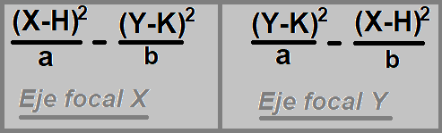
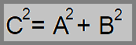
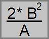

El presente informe tiene como objetivo, el desarrollo de problemas de aplicación sobre el apartado de cónicas, los cuales deben ser presentados de forma original, con claridad y evitando errores conceptuales en su resolución.
Esta modalidad innovadora de parcial, tiene como objetivo, el desarrollo de habilidades profesionales ampliamente requeridas en el mundo laboral como la creatividad, relacionada con la pauta de originalidad del proyecto, la búsqueda y la implementación de los problemas de aplicación, el correcto desarrollo de informes y trabajos, trabajo en equipo, interiorización de los conceptos de las cónicas e implementación de sus fórmulas; entre muchas otras habilidades, lo que vuelve al proyecto, un excelente desafío a llevar a cabo para los estudiantes de las ingenierías.
Particularmente, el presente informe fue realizado con la tecnología de HTML5, CSS3 y subido a la red utilizando los servicios de hosting de GitHub. Los conocimientos sobre los lenguajes fueron adquiridos de forma particular, fuera de la institución, pero se adaptan perfectamente al concepto de originalidad de la propuesta, y creemos que es una buena forma de combinar conocimientos de álgebra, particularmente las cónicas, con temas intrínsecamente relacionados a la carrera de ingeniería informática. Todos los códigos utilizados para la creación de la página web, estarán en un documento a parte presentados para su visualización y corrección.
Hipérbola
Cuando se habla de una cónica, se hace referencia a la curva que se genera en una intersección entre un cono y un plano. La palabra cónica deriva de “cono”.
Hay cuatro tipos de cónicas diferentes:
Circunferencia
Parábola
Hipérbola
Elipse
Este informe se basará en la llamada hipérbola.
La hipérbola se define como el lugar geométrico de los puntos cuya diferencia de distancias entre los dos puntos fijos es constante (los puntos fijos se llaman focos). En relación a la ecuación general, la cónica será una hipérbola si el signo de A, es opuesto al signo de B, y C = 0.

Ecuación de la hipérbola
Elementos que componen a la hipérbola:
Eje focal: eje donde están ubicados los focos de la misma. Se determina teniendo en cuenta que siempre es el positivo de los dos términos de la ecuación anterior.
Eje normal: eje perpendicular al eje focal. Se determina observando en la ecuación cuál de los dos términos es el negativo.
Focos: puntos fijos sobre el eje focal, cuya diferencia de distancias hacia cualquier otro punto de la curva es constante. Para hallar los focos es necesario conocer el valor C, llamado semidistancia focal, que verifica la siguiente ecuación:

Relación A,B,C
Estos se calculan, como los puntos, partiendo desde el centro, aumentando "C" y "-C" unidades sobre el eje focal.
Centro: el centro de una hipérbola es el punto medio del segmento de línea uniendo sus focos. Se puede observar en la ecuación, donde H, es el valor de X del centro, y K, es el valor de Y.
Vértices: son los puntos extremos de la curva sobre el eje focal. Se calculan como los puntos, partiendo desde el centro, hasta “A” y "-A" unidades sobre el eje focal.
Eje real: distancia que hay entre los vértices de la curva. Se calcula mediante la ecuación: 2*A.
Eje imaginario: segmento de longitud 2*B.
Lado recto: es la distancia recta del foco a ambas ramas que forman la hipérbola.

Ecuación lado recto
Excentricidad: la excentricidad, mide la apertura de las ramas con respecto a los ejes focales. Esta, se calcula como el cociente de C/A. Dado que C es mayor a A en todos los casos de hipérbola, la excentricidad deberá ser mayor a 1. Cuando e tiende a 1, la distancia entre C y A va a tender a 0, y por ende las ramas van a tender a unificarse, formando una recta partida.
Asíntotas: son las rectas que se intersecan en el centro de la hipérbola y se acercan a las ramas al alejarse estas del centro de la misma. Para encontrarlas, teniendo al centro como un punto de ambas asíntotas, se calcula la pendiente, teniendo en cuenta que:
M = +- A/B, si eje focal = Y
M = +- B/A, si eje focal = X
Luego, se encuentra la ordenada al origen de cada una, reemplazando en el centro de la hipérbola.
El contenido del informe consta de dos problemas de aplicación. Se define problema de aplicación, como una incógnita acerca de una cierta entidad matemática, que debe resolverse a partir de otra entidad del mismo tipo que hay que descubrir.
A la hora de resolver un problema de aplicación es recomendable seguir una serie de pasos, que constan de cuatro fases:
Comprender el problema
Plantear el problema
Resolver el problema
Comprobar la solución
Conclusión
En conclusión, luego de una previa investigación de la cónica hipérbola, y de los conceptos principales sobre HTML5 y CSS, se logra llevar a cabo una pagina web informativa y práctica sobre esta cónica, dotada tanto de teoría, como de ejercicios prácticos que cumplen con el objetivo, no solo el cumplimiento de este informe parcial, sino también del refuerzo de los conocimientos teóricos, la creatividad a la hora de pensar y realizar los problemas de aplicación, y la convergencia de dos sectores de la ingeniería informática, como lo son álgebra y programación, que no suelen relacionarse entre sí, por lo que con esta conclusión, damos por terminado el informe.
Bibliografía
Las imágenes utilizadas fueron extraídas del apartado de imágenes de Google con licencia Creative Commons.
El material teórico consultado para la realización de los problemas de aplicación, es el teórico presentado en clase: Vigo, Patricia. Bianchetti, Luis Antonio. (Abril 2021). Hipérbola. [33]. https://ead01.ufasta.edu.ar/pluginfile.php/1135981/mod_resource/content/8/Hip%C3%A9rbola-1%C2%BAparte-apunte%20te%C3%B3rico.pdf
De forma adicional, utilizamos un material extraído de: Gómez, Federico. Pustilnik, Isabel. (8 Noviembre 2017). UTN.BA. https://aga.frba.utn.edu.ar/hiperbola/.
La pagina web ha sido realizada de forma independiente, con conocimientos previos de la tecnología HTML5 y Css, y el código de la misma estará adjuntado en un archivo externo para revisión.